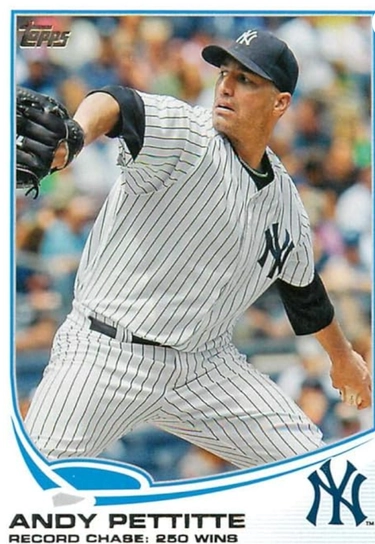

Andy Pettitte "Petey"
Career Highlights & Facts
(Facts are AI-generated and may require verification)
- Possesses a legendary pick-off move that scouts claimed could catch a mayor in an office.
- Holds the record for the most postseason pitching wins in history.
- Started a career-ending game by throwing a complete-game 5-hitter.
Would you like to find out more about Andy Pettitte?
Read Player Biography
Andy Pettitte
October 2, 2019
/
in
BioProject - Person
1990s All-Stars
,
2000s All-Stars
,
2010s All-Stars
2026 Hall of Fame ballot
/
by
admin
This article was written by
Josh Berk
To some, Andy Pettitte’s name is immediately associated with the
Mitchell Report
, Human Growth Hormone, and ties to his old friend
Roger Clemens
. To others he will forever be known as a member of the “Core Four” — one of a quartet of homegrown Yankee legends that led the team to a phenomenal string of a successes including four World Series championships in five seasons from 1996-2000. But before Pettitte was breaking postseason pitching records and forming a dynasty with
Derek Jeter
,
Mariano Rivera
, and
Jorge Posada
, he was a Little Leaguer throwing fastballs in the bayou.
Andy was born on June 15, 1972 in Baton Rouge, Louisiana, to Tommy and Joanne (Martello) Pettitte. Tommy Pettitte was a police officer, working his way up to sergeant before leaving that line of work, and the state of Louisiana. He changed careers rather drastically in 1981, landing in a chemical plant that produced additives for motor oil in a small town near Houston, Texas.
1
The family moved with him, including 8-year-old Andy and his sister Robin.
2
At their new home in pigskin-mad Texas, Andy played some football but loved baseball from a young age. His father was encouraging to the budding southpaw, even building an AstroTurf mound in the yard for Andy to throw off of. Fellow Texan pitchers
Nolan Ryan
and Roger Clemens were among his heroes as he grew into a fine pitcher himself.
3
Andy loved sports, but didn’t feel quite the same about school. He had to force himself to study hard just to get through. He was a quiet kid, one that was not always comfortable around others. As a teenager he met a fellow shy teenager at church, the pastor’s daughter Laura Dunn.
4
Laura and Andy began dating, though Andy joked that they were both so shy that they dated for a year before either got up the nerve to speak to one another.
5
It is fitting that they met in church, as their religious faith was one of the things that bonded them. Andy followed his sister’s lead, becoming a fervent and devoted Christian. Laura’s parents did not approve of her dating so young, but the couple lasted and would eventually marry.
Moving up from the backyard mound to the one at Deer Park High School was the next step. Andy was a good high school pitcher and top prospect. In 1990, after his senior year, he was a 22 nd round draft pick by the New York Yankees. A study of the best late round picks of all time has Pettitte near the top. His career WAR of 60.2 for the 594th pick in the draft is quite remarkable. The highest WAR achieved by any other pick in that round of that year is zero.
6
Coincidentally, there was a pretty good catcher taken in the 24th round, who become an important part of Andy’s professional career. That catcher’s name is Jorge Posada.
Part of the reason Pettitte was available so low in the draft might have been that it was perceived he would attend college. Another reason might have had to do with the “eye test.” Pettitte neither lit up the radar gun nor was the refined physical specimen some other young players were. “I was a late bloomer who still had some baby fat” Pettitte admitted; other reports used words like “chunky,” “lumpy,” and “pudgy.”
7
He may have been heavy, but he had a great arm and a fabulous pick-off move. “He could pick the mayor off in his office,” is a colorful way one scout described it.
8
His high school numbers were great and he was a lefty with talent, even if he wasn’t reaching up in the 90s on the radar gun.
9
The Yankees had a “draft and follow” arrangement, meaning they had a full year to come to terms while both sides considered options. Pettitte ended up going to junior college, which would allow him to go pro later that year if he so chose, whereas playing for a Division I team like LSU wouldn’t. He pitched well at hometown Jacinto Junior College and worked hard, lost weight and gained strength.
10
He credits renowned San Jacinto coach
Wayne Graham
as helping refine his delivery and helping him focus.
11
At the end of the year, he had to decide if he was going to stay in the collegiate ranks, re-enter the draft, or officially join the Yankees. There was a dispute about money, but scout Joe Robison was convincing — and more than a little prophetic. “Andy, when you reach 40 years old,” Robison reportedly told Pettitte at the time, “you’re not going to have to do another lick of work in your life. You’ll have enough money to do nothing except watch your kids grow up and go fishing.”
12
They agreed on a number ($80,000) and he signed right there at his grandmother’s kitchen table. Reflecting back on his draft day in a 2016 interview, Pettitte said “for me it was a horrible day.” He recalled trying to negotiate as an 18 year-old without representation and without knowledge of the system. He felt he should have been signed for more.
13
After that rocky start, he rose relatively quickly through the minor leagues. His career at one point could have taken a much different path. As a very young pitcher one of his weapons was a great knuckleball. In the Gulf Coast League his pitching coach was
Hoyt Wilhelm
, whose legendary knuckler helped him break records in a long major league career spanning 1952-1972. Pettitte had a knack for the pitch and Wilhelm took him under his wing. It was Andy’s teammate in the GCL and future Yankees batterymate, Posada, who talked him out of it. Like many catchers, Posada did not relish trying to corral the unpredictable pitch. Pettitte hit him in the foot with a dancing knuckler one too many times and Posada said, “Dude, if you’re going to keep throwing that I’m not going to catch you anymore.”
14
Pettitte developed a straight change instead.
The change-up served him well, as did his ever-stronger fastball and good breaking stuff. Andy progressed through the minor leagues, stopping to get married to Laura while in A ball, and got called up to the majors in 1995. He did not fare well in his first appearance with the big club, giving up two runs on three hits in two-thirds of an inning in relief against the Royals on April 29, 1995. He got another chance the next day and this time gave up an unearned run in an inning of relief. He was sent down to the minors after these two quick appearances, but was called back up just over a week later. His next few outings were also in relief; he got his first chance to start on May 27, against the A’s. He gave up just one earned run, but shaky defense from the Yankees and a shutout from the opposing starter,
Steve Ontiveros
, meant he got the loss.
Pettitte would make 25 more starts for the year, ending with a record of 12-9 and an ERA of 4.17. The 12 wins was the most by a Yankees rookie in 27 years, since
Stan Bahnsen
’s 17-win Rookie of the Year season in 1968. Pettitte’s best start of the year was a complete game against the Angels where he gave up just one run and struck out eight. He went 5-1 down the stretch, setting a precedent of finishing strong to ensure he would end the season with a winning record.
It was just about everything you could hope for in a rookie campaign by a young pitcher. Pettitte placed third in the AL Rookie of the Year voting. Left fielder
Marty Cordova
of the Twins had a 20/20 campaign to earn the award. The Yankees won the wildcard (the first of its kind) in a strike-shortened season and though they lost the ALDS to the Mariners, Pettitte got his first taste of the playoffs and solidified his status as a starter for his sophomore season.
In 1996 the Yankees wouldn’t settle for the wildcard, though it was far from a smooth ride to the championship. Number one starter and team leader
David Cone
suffered a mysterious injury that ended up being an aneurysm requiring serious surgery.
15
Several other pitchers also got hurt, owner
George Steinbrenner
caused havoc with roster changes, and the team squabbled. But Pettitte was steady. His first half landed him a spot on the All-Star team. He became the ace on a championship team in his first full season. He developed his cutter and that nasty move that led the majors with 10 pick-offs. The Yankees won the Series for the first time since 1978. In Game Five of the 1996 Series, Pettitte outdueled the great
John Smoltz
in one of the best games of his career. He finished the year 21-8 with an ERA of 3.87 and finished second in Cy Young voting to
Pat Hentgen
.
In 1997 Pettitte had in many respects an even better year: 18-7 with an ERA of 2.88. He led the league in fewest home runs allowed at just 0.3 per nine innings. He logged 240.1 innings in 35 starts. The Yankees made the playoffs again but lost to the Indians. The next season was another good one for Pettitte (though his ERA did climb to 4.24) and a great one for the Yankees. Some consider it the best team in baseball history. It ended with Pettitte getting the win in the final game of the 1998 World Series, pitching 7.1 scoreless innings. After the game Jeter was quoted as saying “Andy is a big game pitcher. That’s the bottom line. Every time you think his back is against the wall, he comes out and he does a performance like this.”
16
His reputation was growing as one of the top left-handed pitchers in the game.
The Yankees followed up their world-beating 1998 with another championship season. The off-season was good news for Pettitte as well — the Yankees signed his old hero Roger Clemens. “It was great,” Pettitte said of the first time they met. “It fired me up. It was meeting somebody you looked up to, watched since high school. It was awesome.”
17
Pettitte didn’t pitch well at all to start 1999; he gave up six or more runs in five of his first-half starts. At the end of June he was 5-6 with an ERA of 5.53. His July wasn’t much better. After giving up eight hits and two walks in three and a third against a mediocre White Sox team, Steinbrenner made his displeasure known publicly. He was very aware of the big bump in pay Pettitte was due the following year. “How can he look at that [pay raise] after the type of year he’s having now?” Steinbrenner asked a
New York Times
reporter.
18
Trade rumors swirled and Pettitte was very nearly sent to the Phillies. The deal fell through and Pettitte had an excellent final two months with the Yankees. He was 7-3 down the stretch, with five wins in August. He picked up two wins in the playoffs and although he didn’t pitch well in the Series, the Yankees swept the Braves for another championship.
The stretch of success for the Yankees continued: with the “Core Four” in place they won the World Series in 2000, made it again (but lost) in 2001, made it to the ALDS in 2002, and made it to the Series again in 2003. Throughout this stretch Pettitte was reliable and successful. Though he never won a Cy Young Award, he came in fourth in the AL voting in 2000 and sixth in 2003. His ERA is more impressive when adjusted to ERA+, which factors in park and league variables.
19
By the end of this stretch (1995-2003) he had 13 postseason wins; the Yankees won 11 of his postseason starts in a row. He’d finish his career with a record 19 postseason wins and an ERA of 3.81. He threw 276⅔ innings in the postseason, far more than any player in history. Part of this was of course due to his team’s excellence and the expanded playoff system, but his individual effort played a big part too.
Pettitte wasn’t flashy — he’s been called “more plow horse than show horse.”
20
He preferred to stay quiet off the field. He wasn’t part of the New York social scene and was known for his Christian faith and devotion to his family. He was intensely competitive, though, often quoted as saying “Whatever I do, I love to win. I don’t care if it’s tennis or ping-pong, I’ll kill myself to win it.”
21
After the 2003 season, it was “rather baffling” how little interest the Yankees expressed in re-signing Pettitte, according to manager
Joe Torre
.
22
The Yankees waited until the last day of their 15-day exclusivity period to even contact him. Steinbrenner, according to Torre, had a habit of not coveting what he already had. The Red Sox expressed keen interest but Pettitte wanted to return home to Texas.
23
Other than being reunited with his old friend Clemens, who also signed with the Astros that offseason, Pettitte’s homecoming was not a sweet one, as he tore a tendon in his forearm while batting in his debut. He was on and off the disabled list all year before finally ending his season in August to undergo surgery with Dr. James Andrews.
24
Pettitte would turn 33 during the 2005 season, was coming off surgery, and had an awful start. However, he turned his season around in the middle of June and didn’t slow down. He won six decisions in a row in one stretch then seven starts in a row. He’d finish the year 17-9 with an ERA of 2.39, good enough to place fifth in the Cy Young voting and to garner a few votes for MVP. The Astros made it to the World Series, where they were swept by the White Sox.
In 2006 Pettitte had a slow start again. He gave up seven earned runs in 4⅔ innings in his first game of the year and had six starts in the first half where he gave up six or more earned runs. Again, his second half was strong and he finished with a 14-13 record and a respectable 4.20 ERA. It was his last year in Houston. The 34 year-old Pettitte made a decision to return to the Yankees in the offseason following the 2006 season. “It’s been a brutal several days trying to come to this decision,” Pettitte said. “It’s been extremely difficult.”
25
It was a one-year contract for sixteen million dollars, coupled with the opportunity to again play with Jeter, Posada, and Rivera. The team would surprise most observers by winning the wildcard before losing in the ALDS.
Following the 2007 season, the baseball world was rocked by
The Mitchell Report
. Dozens of players were listed as users of steroids and other performance enhancing drugs. Pettitte’s name was there among those who used Human Growth Hormone. Unlike others who vehemently denied the charges — Clemens among them — Pettitte came clean. He admitted to being injected with the substance, but noted that it wasn’t banned at the time and that he was of the belief that he was taking it not to gain an unfair advantage but rather to recover more quickly from an elbow injury in 2002.
“I felt an obligation to get back to my team as soon as possible,” Pettitte said. “For this reason, and only this reason, for two days I tried Human Growth Hormone.”
26
He relied on his faith during this difficult time and found many fans willing to forgive him.
27
Not everyone believed him, given factors such as a late-career increase in velocity as well as the damning fact that he changed his story about Clemens under oath. Clemens was outed as a steroid user and the close nature of their relationship cast doubt onto Pettitte as well.
28
Some observers praised Pettitte for being honest while others focused on the fact that even if not specifically banned by baseball, HGH was illegal and Pettitte had to know using it was wrong. He had always been known as a stand-up guy and an honest man.
Clemens did not return for 2008, but Pettitte did. He started 33 games, winning 14 with an ERA of 4.54, his highest since 1999. The Yankees did not have a great year and missed the playoffs for the first time since 1993. In 2009 Pettitte had 14 wins again, got the ERA down to 4.16 and again pitched well in the playoffs. The Yankees won the Series again; Pettitte had four wins in the postseason and even had an RBI single off
Cole Hamels
to tie the game in the fifth inning of Game Three of the World Series.
Pettitte got off to an uncharacteristic great start in 2010 but a groin injury cost him much of the season. He decided to retire. After less than a year out of the game, however, he changed his mind and signed a minor league contract with the Yankees.
29
Some observers found it odd and called him “over the hill.”
30
Yet General Manager
Brian Cashman
was confident in the move. He had been working on getting Pettitte to change his mind for months. Everyone around the organization was thrilled at Andy’s return to pinstripes, even the young starters he’d be challenging for a job.
31
It took Pettitte some time to get back in shape, and he started only 12 games in 2012 but did record an impressive ERA of 2.87. The Yankees won the AL East before being swept in the ALCS. Pettitte returned to New York again for 2013 and was good for 30 starts, 11 wins, and a 3.74 ERA. His final start was the last of his career–there would be no coming out of retirement this time. The five-hitter against his old team, the Astros, ranks highly on lists of great pitchers’ final starts.
32
He walked two, struck out five, and went the distance for his first complete game in seven years. It was his 438th start in a Yankees uniform, ending with the same exact number as
Whitey Ford
for the most all-time in pinstripes. He had passed Ford earlier in the year for the number one spot for strikeouts by a Yankee pitcher.
Andy Pettitte Day was held at Yankee Stadium on August 23, 2015, in a ceremony where his number 46 was retired and his plaque hung in Monument Park. He joined Jeter, Posada, and Rivera on the field. Posada even got behind the plate to catch the ceremonial first pitch. If there was anyone on first, Andy probably would have picked him off.
The plaque reads:
A five-time world champion and three-time all-star, Pettitte was a model of consistency in the Yankees rotation for 15 seasons, going 219-127 (.633) and tying the franchise record of 438 starts… The lefthander retired with the third highest win total in franchise history and he is the club’s all-time strikeout leader with 2,020. Twice a 20-game winner, Pettitte finished his career as the first player to pitch more than 15 seasons in the majors without ever having a losing record
.
Pettitte’s post-baseball life isn’t really post-baseball at all. He remains involved in the game both as coach and as baseball dad. In 2018 he became a pitching coach for the high school team whose head coach is former Astros teammate
Lance Berkman
.
33
Houston Second Baptist is a small private school, far from the bright lights of New York, but you can bet the competition is still fierce. Sons Jared and Josh are both pitchers too: Jared for the University of Houston and Josh at Rice University.
Last revised: October 1, 2019
Acknowledgments
This biography was reviewed by Rory Costello and Darrell Jarvis and fact-checked by Mark Sternman.
Notes
1
Harvey Araton, “Sports of The Times; Pettitte’s Father Shows His Resolve.”
New York Times
, March 5, 2000, https:
2
Thompson, Teri, et al.
American Icon: the Fall of Roger Clemens and the Rise of Steroids in Americas Pastime
. (Alfred A. Knopf, 2009).
3
YES Network. “Andy Pettitte Talks about His Early Life Background – Video.” Yesnetwork.com, Yes Network, July 28, 2010, https://web.yesnetwork.com/media/video.jsp?content_id=10342591.
4
Michael O’Keeffe, et al. “How HGH Triangle Ensnared Andy Pettitte, Dad and Trainer.”
Nydailynews.com
, February 17, 2008, https:
5
“Andy Pettitte Talks about His Early Life Background – Video.”
6
Kerry Miller, “MLB Draft Steals: The Best Late-Round Picks of All Time.”
Bleacher Report
, May 8, 2018, https:
7
John Harper, “Modern Yankee Heroes: Andy Pettitte Carves out Legacy as One of the Yankees’ Best Big-Game Pitchers.”
New York Daily News
, March 20, 2010, https:
8
Wayne Coffey, “Yankees Lefthander Andy Pettitte Goes from a Pudgy Prospect to Pennant Winner in Pinstripes – NY Daily News.” Nydailynews.com, New York Daily News, April 9, 2018, https:
9
Ibid.
10
Joel Sherman and David Cone.
Birth of a Dynasty: behind the Pinstripes with the 1996 Yankees
. (Rodale, 2006).
11
Buster Olney, “The Coach Who Groomed Two Yankees.” The New York Times, The New York Times, August 21, 2001, https:
12
Ian O’Connor, “Andy Pettitte Turned His Fire into Ice.”
ESPN
, ESPN Internet Ventures, February 4, 2011, https://www.espn.com/new-york/mlb/columns/story?columnist=oconnor_ian&id=6088090.
13
YES Network. “Andy Pettitte’s MLB Draft Day Story.”
YouTube
, YouTube, June 9, 2016, https://www.youtube.com/watch?v=4OMWiUSGTrM. Interview for the YES Network
14
Lou DiPietro, “Andy Pettitte Laments the One That Got Away: His Knuckleball.” Yesnetwork.com, https://web.yesnetwork.com/news/article.jsp?ymd=20150823&content_id=144902402&fext=.jsp&vkey=news_milb.
15
Joe Torre and Tom Verducci.
The Yankee Years
. (Anchor Books, 2010).
16
Baseball-almanac.com.
Andy Pettitte Quotes
. http://www.baseball-almanac.com/quotes/andy_pettitte_quotes.shtml. Accessed December 19, 2018.
17
Del Quentin Wilber, “Roger Clemens Trial: Andy Pettitte Describes Friendship with Embattled Pitcher.”
Washington Post
, May 1, 2012, https:
18
Buster Olney, “Baseball: Pettitte’s Head, It Appears, Is on the Trading Block.”
New York Times
, July 30, 1999, https:
19
Jay Jaffe, “JAWS and the 2019 Hall of Fame Ballot: Andy Pettitte.”
FanGraphs
, December 17, 2018, https:
20
Jaffe, “JAWS and the 2019 Hall of Fame Ballot: Andy Pettitte.”
21
Widely attributed.
22
Joe Torre and Tom Verducci.
The Yankee Years
. (Anchor Books, 2010).
23
Tyler Kepner, “Yankees Lose Part of Their Core As Pettitte Signs With Houston”.
New York Times,
December 12, 2003. https: Retrieved October 14, 2009.
24
Associated Press, “Pettitte Has Torn Flexor Tendon.”
ESPN
, August 19, 2004, https://www.espn.com/mlb/news/story?id=1862341.
25
Ronald Blum, “Pettitte Returns to Yankees in $16M Deal.”
Fox News
, December 9, 2006,
www.foxnews.com/wires/2006Dec09/0,4670,BBOBaseballRdp,00.html
.
26
Mike Vaccaro, “Andy’s Pitch Right Down the Middle…”
New York Post
, December 16, 2007, https://nypost.com/2007/12/16/andys-pitch-right-down-the-middle/.
27
Adam Nichols and Adam Lisberg. “Andy Pettitte Finds Haven at His Texas Church, Worshipers Forgive HGH Rap – NY Daily News.”
New York Daily News
, April 9, 2018, https:
28
Jon Heyman, “Pettitte’s under-Oath about-Face Costs Him One Hall of Fame Vote–This One.”
CBSSports.com
, April 6, 2017, https:
29
Ryan Chiavetta, “Report: Andy Pettitte Comes Out of Retirement, Signs Minor League Contract With Yankees.”
NESN.com
, March 16, 2012, https:
30
Tony Manfred, “The Yankees Just Lured Over-The-Hill Legend Andy Pettitte Out Of Retirement For $2.5 Million.”
Business Insider
, March 16, 2012,
www.businessinsider.com/yankees-sign-andy-pettitte-2012-3
.
31
George A. King, “Yankees Bring Pettitte out of Retirement.”
New York Post
, March 17, 2012, https://nypost.com/2012/03/17/yankees-bring-pettitte-out-of-retirement/.
32
Andrew Mearns, “Was Andy’s 5-Hitter the Greatest Final Start Ever?”
Pinstripe Alley
, October 7, 2013, https:
33
Richard Obert, “Lance Berkman and Andy Pettitte Leading the Way for Houston Baseball Team.”
MSN.com
, March 14, 2018, https:
Full Name
Andrew Eugene Pettitte
Born
June 15, 1972 at Baton Rouge, LA (USA)
Stats
Baseball Reference
Retrosheet
Tags
1990s All-Stars
·
2000s All-Stars
·
2010s All-Stars
·
2026 Hall of Fame ballot
·
Career Totals
| WAR | W | L | ERA | G | GS | SV | IP | SO | WHIP |
|---|---|---|---|---|---|---|---|---|---|
| 60.2 | 256 | 153 | 3.85 | 531 | 521 | 0 | 3316.0 | 2448 | 1.351 |
Statistics via Baseball-Reference.com
The Original Clue